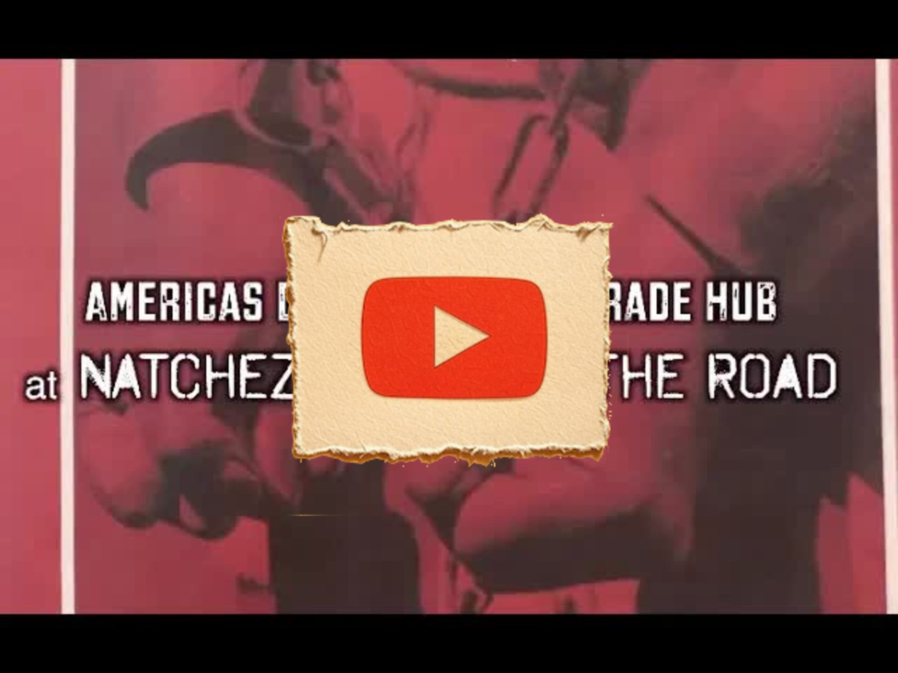

Great Pods
Americas Domestic Slave Trade Hub at Natchez Forks of the Road
Key Points
The Forks of the Road was the second largest enslaved person selling market in the old Southwest, operating in Natchez, Mississippi from 1833-1863
Natchez was once the richest city in the Deep South with more millionaires per capita than anywhere else in the 1850s, built on enslaved labor
The market was located east of Natchez at the junction of St. Catherine Street, Liberty Road, and Washington Road
Enslaved people were trafficked from the upper South (Maryland, Virginia, DC, Kentucky, Missouri) to be sold in Natchez
The exhibition uses the term "enslaved" rather than "slave" to acknowledge that people had another status before being forced into bondage
The research spans 23 years (since 1995) documenting the history of chattel slavery at this site
Original bills of sale and handbills provide concrete evidence of the transactions that took place
The exhibit includes actual names, descriptions, and prices of enslaved people from historical documents
Enslaved people constantly sought freedom through escape, contradicting myths that they couldn't flee from the Deep South
The Underground Railroad was active in the Mississippi River and Forks of the Road region
Many enslaved people became Union soldiers during the Civil War, contributing to the defeat of the Confederacy
The site became part of the Natchez National Park Service in 2018 after 24 years of preservation efforts
The traveling exhibition has been displayed since January 2018 at the Natchez Convention Center
The campaign represents "equal history" - overcoming narratives that ignore African American contributions
Plantation records and diaries reveal the brutal conditions and rules imposed on enslaved people
The exhibit includes information about survival strategies and adaptation of enslaved people in new environments
Events and reenactments at the site help educate the public about this history
The exhibition has received positive feedback from international tourists and helps open dialogue about slavery in the tourism industry
Full Transcript
Language: en decent blessing I am sir such a bright air box Lee and we're here in my hometown of Natchez Mississippi at the nicest visitors and Convention Center where I have an exhibition about chattel slavery selling markets the markets that operated in Natchez from 1833 to the 1860 civil war called the folks of the road this is a place that was east of Natchez where dealers and flavored traffickers who were selling our ancestors from the upper South Maryland Virginia DC Kentucky Missouri and bringing them down to Natchez Mississippi during the days of child flavory roughly from 1833 to 1863 are when the Union Army occupied Natchez and they operated that the folks of the road a jump ship place and not just east of Natchez call the folks to the road I've been working on the history of chattel slavery since 1995 my return back to Natchez and what I'm essentially doing is I'm carrying on an equal history campaign equal history means to me in definition overcoming white people trying to make it look like they've done everything by themselves so Natchez is a historic city at one point it was the most Richard it was the richest city in the deep south in terms of the cotton Kingdom there were more millionaires and Natchez at one point around the 1850s than any other place per capital they say in the country this was based upon selling and buying of enslaved people who were enslaved on the plantations in the surrounding areas and what they call the old Natchez district of the counties of Jefferson Claiborne Adams Wilkinson Franklin and the parishes of Concordia and since our parishes in Louisiana were essentially the concentration of a slave person who was so here the the folks of the road market was said to be the second largest in flame is selling market in the old Southwest outside of New Orleans New Orleans was considered to be the largest one in the deep south west not in the complete south because in the complete South Charleston South Carolina was the largest so what I've been able to do for the last 23 years is to look at this history channel enslavement and fine and research the stories and the adds a whole complexity of research done to help come up with the facts and the data that reflects the history of what happened in Natchez at the folks of the road enslavement market and as a result of that research I put together a traveling Exposition exhibit as such it's called folks of the road and we want to look at this folks of the world travelers David I want you to come with me and I'm going to try to give you an example of quick explanation what the is if it contains and so the first panel in the exhibit is called Fox River Road in flaming market the a major Southwest hub of America's domestic slave trade and when I say the word say it's going to be in quotation because I would never call my ancestors that oppressive term slave we wouldn't call our great-great grandparents the other names or any oppressive names aside and there's no real social redeeming need and 2018 to be referring to our African ancestor this flame that's somebody else oppressor term and we want to use the term enslaved which tells us that at one point in time we had another status other than being forced brought out Africa in captivity and enslaved in the so the first panel gives you an idea whether location of the marketplaces would be you can see this is a juncture of streets east of Natchez that we'll call st. Catherine Street Liberty Road and Washington Road and there were these enslavement markets where you see the brown squares located at the Fox of the road and dozens upon dozens of dealers or traders or traffickers or what-have-you operated from this site so I want you to be able to see what the location see see what the title is the visible is and then it's in the Africa ethical order we can move to the second panel the second panel parinama tool is called Natchez an early gateway for European migrating southwest and center of chattel enslavement and tragedy that is Natchez the city of Natchez in Mississippi was at the center of trading and essentially this panel shows you the early history of the different invaders into the Mississippi Natchez area we had in the early history the French 1700 early 1700 the same people who invaded New Orleans and then later on we had the British and the Spanish who took turns invading and occupying the area of Mississippi and Natchez and finally the group of people who will call the Americans who also occupied Natchez and what-have-you and it tells us gives you the picture of the example of the Prince among slaves that were an enslaved person called Abdul Rahman Ibrahim but with the Fulani brought from West Africa up around Timbuktu and this just gives thousands of enslaved African people who fortunately brought in captivity doing when America created the embargo of the law against further bringing Africans ancestors into the Americas after 1808 and and so you going to get some early history about Natchez the development of the Mississippi the Southwest and the early and straight people who were brought here in the 1700s early 1730's on up until the the the the turn of the century when the cotton gin was invented and when the cotton gin was invented that became a huge demand or what they call a demand that could not be satisfied in terms of the need for enslaved people to work the cotton and to work the sugar cane and the Lower Mississippi Valley pehle number three deals with in the Tyler says America's domestic slave trading routes to the deep south essentially this panel is a map that has been overlaid several times with other maps that showed what the walking routes were from the upper low Southwest such as Maryland Washington DC Richmond Alexander Virginia the Carolinas Kentucky Missouri and also all the routes that were transverse by water the Mississippi coming around the Atlantic Ocean up to New Orleans and then France transporting from New Orleans up to Natchez which is up the river in the Mississippi area Natchez is essentially coming from New Orleans up to Natchez or down the river from st. Louis Missouri and Kentucky would have you to notch to NASA Vicksburg Natchez and you are Baton Rouge and being sold in those markets so that's what this particular panel talks about and as we go around in the alphabetical order panel four panel for talks about and slay people so that the Fox will road was sold down the according to the map that we just showed you and we have an example of an option that might have taken place in the upper south as well as a map that talks about soul making dollars making money sold down the river in the 1830s we have ads from the dealers and trafficker that talks about enslaved people for sale at the frocks of the road 1840s 1850s and into the 1860s they were not necessary in Natchez at the fo'c'sle row so land auction blocks but in a an assembly situation where one could go and inspect person who for sale and if they had some interest in and they would be taken to a private location and at the market place where there could be intimately examine and what-have-you in terms of the buyers Pamela five gets into the real heart and testimony what was happening at the folks of the road marcasite who sold and brought in bargain slave people at the Fox market we actually have on this pound copies of original handbills that were signed by the enslaved for example this lottery shows a bill of sale from Theophilus Freeman from New Orleans the opera's freedmen in 1836 was operating in Natchez at the forks of the road but also the appellee Freeman in 1842 was the same deal in your land who so Salomon knocked off of twelve years of slavery would have so if you want to actually see some proof of what was going on at the folks of the road we have the the copies of the actual bill to say Oh most of the historians who have reported on the enslavement traffic the chatter enslavement traffic never really put specific Bills of sale they might write about them with but these are the actual copies of them as such and so I wanted to be more emphatically clear and demonstrated about what happened at the forks of the road so we put these bills of sales about who bought that right for and who sold pala five-a who sold and bought and played people at the Fox market here we have a chart that I've developed that shows a history of different enslavers who are selling at the frocks of the world and different people in slavers who who lil got ancestors at the fox of the road who some of those ancestors were and what where they were distribute to in the Mississippi Louisiana area and what would you hear that happen another item we have an example of 1859 bill of sale that not only give you the list of the enslaved person sold by this deal of a Blackwell Murphy and Ferguson from but we have the whole names of the enslaved people who were ill gotten and the prices that they brought not only that did the description of black yellow or brown that's why we began to get this color description and was heavy so as we move on in the exhibit travel if we're touring we want to take a look at Calais six we're looking at Palace six that says new masters new overseers new rules for making slaves and we have here an diaries are the enslavers who wrote about the rules for making and freight persons and where weapons took place and make people in straight people pick more cotton whatever it is that they had to do as a regular forced labor the punishment for not getting a dot or not getting enough of it done we have it taken actually from the the diaries of the in flavors and this shows the picture of a hospital for treating and slave doing child slavery days at the fox of the world so if you were going to take a look as you continue to tour the exhibit we get to panel seven and the title of Penance 7 is habits is everything for making cotton king in the natural reason and what we do here is we take some more information out of the diaries of and in the entries out of the reports on would help you about the goings-on on a particular plantation this refer for example tells me just in flavor the sujay people here in the plantation in in Natchez in Louisiana says on June 1854 the the nineteen nineteen people were prowling three were carrying water a gang of 3200 and cotton and Sam Edmund and ELISA and Martha was work with Leslie they say Sam Lewis was sick but Edmund and ELISA are Eliza Martha and were runaways as such and so you can get to see what's coming out of the particular logs or work logs or history that was being kept daily on this particular panel we move on to panel eight and it talks about surviving rules and laws of playmaking in the fox when enslave ancestors of abroad encamped captivity from the upper South Maryland Virginia in those places Kentucky Missouri they they had to be brought into a new area of the south where they had to learn what the habits were learned how to get along with the new masters learn to work in hot summer long days in place in areas of the south of the Lower Mississippi area that they hadn't been used to another time so they have to survive all these type of new new situations and our people did survive these areas many ran away all the way to Canada to Mexico some ran away back to where they were enslaved and so on but essentially the pastor of the essences is that the enslaved people coming from the upper low South had to eventually find ways to survive in the Old South that was different from the conditions in what happier that they had been enslaved in and moving on around to towards the the last of some of the panels panel number nine Mississippi River in the fox of the road region a major underground railroad Freedom House and what this panel does what I tried to do with this panel is to kill the legacy of the myth that was enslaved people were sold down the river they couldn't asleep you know they didn't know the terrain all of these kinds of myths that historians have written about as to why enslaved people in the deep south couldn't escape well that was what they call now very popular fake news because the newspapers and other Diaries and other sources showed that our ancestors ran away constantly all the time going north south east west they went by river they they they ran away from and sought their freedom with their feet and we are hoping that I can they eventually publish some of the research to show I've developed a matrix that shows the runaways were women children people who worked in the big house where they call field hands house hands has such an all kinds of people even people who were sons and daughters of enslaved people the issue was freedom and we can never emphasize the extent to which our people went to to try to get the freedom if it was only temporary so so we move on to panel ten and it talks about my campaign and Mississippi and Natchez and what I've been doing for the last twenty four years here coming up with the story about what our ancestors impact was in reference to being sold and their efforts to seek freedom equal history commemoration advocacy and planning efforts are preserving the folks of the rule site essentially what it says here is gives you an image of where the site was located and it talks about my efforts for the last twenty four going on 24 years of preserving the site resurrected in the history and making it public non carrying on activities libation living history plays and other kinds of means of letting the public know and eventually here in 2018 decided the frocks of the road that was enslavement market site is going to become part of the Natchez National Park Service so and 24 years of work individually collectively and otherwise of working to preserve the story of our ancestors the site of my ancestors will inflate and their contribution to making Mississippi and Mississippi and Natchez Louisiana and other places part of the American process and success this story is now going to be enshrined in the National Park Service and the federal government is going to have to start telling about the human history and the impact of the Carroll enslavement and the contributions of our ancestors who were enslaved so finally we get to the final panel and it's called events at the forks of the road and connecting parts on the Underground Railroad essentially what this panel does is to show you pictures and images of a variety of times over the last 23 years where we've had events at the folks of the road to highlight the history for example here's congressman Bennie Thompson who is elected to the US Congress from Mississippi whose village in the folks of the road we talked about Emancipation Proclamation or Underground Railroad type of activity we have here a panel that shows US Colored Troops these are reenactors who react in the story what happened during the Civil War and our people self emancipated that is they ran away to become behind Union lines to get their freedom and many of them became freedom fighting Union soldiers we call that kind of thing Underground Railroad activity and we help over in this particular part of the panel information about the Underground Railroad Network the freedom program of the Park Service and their interest and helping us to tell the story here in Mississippi here in NASA so folks this is what my folks are the road traveling exhibition essentially is about it gives you details and more work with educates you even more so about the folks of the road and the dealings and traffic and the history that of child slavery that took place at the front row I like to say that the front row the story of what the enslavers did to our people and the blacks the x-ray the runaway enslaved people self emancipated who became civil war freedom fighters tells the story of what we did to the enslaved but how our ancestors helped to destroy a chattel slavery make 13 14 15 Amendment freedom constitutional freedom amendments of possible by helping to defeat the South the exhibitors are available for showing at other locations and venues if you interested in that we're at the Natchez Convention Center and the exhibit has been up since January of this year 2018 and the comments that have been coming from the tourists from all over the world is that it's a great exhibit I enjoyed it loved it excellent awesome and on and on or those kinds of comments as they and it helps to open up the heads and ideas people here in the tourism industry who have been afraid to really talk about child slavery in Natchez and I thank the people who have helped me in the past with the struggles and and the struggle
← All Summaries
Watch on YouTube